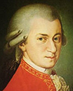

(1756. január 27., Salzburg - 1791. december 5., Bécs)
Wolfgang Amadeus Mozart fantasztikus zenei tehetségét apja, aki kiváló hegedűművész, zeneszerző és pedagógus volt, igen korán felfedezte. Leopold Mozart széleskörű zenei ismeretekkel látta el a csodagyermek Mozartot. Hosszabb-rövidebb utazásokat tettek, hogy a kis Mozart zsenijét mennél több helyen bemutathassák. Fellépéseik mindenütt szép sikert arattak, és csodálatot, feltűnést keltettek. Münchenben a választófejedelem előtt szerepeltek, Bécsben Mária Terézia császárnő fogadta őket. Ferenc császár tréfálkozva tette próbára a kis Wolfgangot: egy kendővel letakarja a zongora billentyűit, és így kellett bebizonyítania egyedülálló tehetségét. Fél Európa a gyermek Mozartot ünnepelte, aki ezáltal megfordult a legmagasabb társadalmi körökben is, és elsajátította a szertartásos, mértéktartó udvariasságot, megismerte az európai élet felhőtlen eleganciáját, amely művészetére is hatással volt. Mozart korában a zene a hivatalos és magánünnepek tartozékának számított. A fejedelmi udvarok szinte egymással versenyezve rendeltek új műveket a jeles alkalmakra. Mozart pedig élete végéig ontotta a kedves, behízelgő szórakoztató zenét - mondhatjuk, hogy korának popsztárja volt.A koncertkörutakról felnőtt korában is mindig visszatért Salzburgba, ám ez a város egyre szűkösebb lett Mozart számára. Az érsek nem volt nagy barátja a muzsikának és Mozart esetében fokozott mértékben mutatta ki a prózai léleknek a művésszel szemben táplált örök ellenszenvét és gőgjét; figyelmeztette Mozartot, hogy nála ne is számítson előnyösebb pozícióra és egyre nehezebben teljesítette a szabadság-kéréseket, melyekben a köteles szolgálatkészség hiányát, sőt a szolgának ura ellen való lázadozását látta. Az érsek szolgálatából kilépve 1777-ben Párizs felé indult, ahol a felvirágzó opéra comique, Grétry-vel az élén, továbbá bizonyos fokig Gluck és Piccini reformzenedrámája kétségkívül erős benyomásokat tartogatott számára. Hangszeres zenéje jelentékenyen gazdagodott újabb művekkel - így a D-dúr szimfóniával (K. 297), Sinfonie concertanteval, a fuvola-hárfa versenyművel (K. 299), egy fuvolaquartettel (K. 298), 2 hegedű-zongora-szonátával (K. 304, 306), és 4 vagy 5 szonátával (K. 310, 330-333). Operatervei azonban egymásután hiúsultak meg; ezért Párizsban, hol az opera egészen háttérbe szorította a hangszeres zenét, helyzete egyre kilátástalanabb lett.
Csalódottan, 1779 január közepén tért vissza Salzburgba. Helyzetét most épp oly nyomasztónak érezte, mint utazása előtt, munkakedvének elvesztéséről panaszkodott, amire azonban meglehetősen rácáfol szolgálati éveinek (ezúttal udvari és dóm-orgonistaként működött) gazdag termése. Hamarosan ismét összetűzésbe került az érsekkel, és ezúttal Bécsben próbálkozott. Gróf Rosenberg, az opera intendánsa, felszólította egy opera komponálására, aki frissen dolgozva új operáján, egyre több összeköttetést szerezve a zenekedvelő szalonokban, bizakodón tekinthetett a jövőbe. Nagyrészt erről a vidám életkedvről tanúskodnak szabad élete első 14 hónapjában keletkezett remekművei. A Szöktetés a szerájból 1782. július 16-án került színre a Burgtheaterben, mégpedig óriási sikerrel, melyet a leghevesebb intrikáknak sem sikerült kisebbíteniük. Ám a Szöktetés sikere csak átmenetinek bizonyult, Mozart nem kapott újabb megrendeléseket színházi feladatra. Amikor az olasz opera diadala már kétségtelenné vált, Mozart felhagyott német opera-terveivel és olasz librettó után nézett. Végre Lorenzo da Ponte színházi költővel való ismeretsége meghozta a szerencsés fordulatot: da Ponte vállalkozott szövegírásra, Mozart kívánságára Beaumarchais Figaro házassága" vígjátékából készített librettót, sőt a császárnál az olasz párt legkíméletlenebb fondorlatai ellenére is keresztül tudta vinni az opera elfogadtatását. Így kerülhetett színre, a császár egyenes parancsára, 1786. május 1-én a Le nozze di Figaro, óriási sikerrel.
1787-ben meghalt édesapja. Ezekben a hanyatló, szomorú napokban írta Mozart - ismét da Ponte szövegére - minden idők egyik legnagyobb remekművét, a Don Giovannit, mely 1787. október 29-én Prágában a szerző személyes vezetésével valósággal lázba ejtette a közönséget. Most végre II. József, a prágai sikernek, nemkülönben a Mozart angliai kivándorlásáról keringő híreknek hatása alatt, a november közepén Bécsbe visszatérő művészt az ugyanakkor elhunyt Gluck helyére kinevezte kamaramuzsikusnak, ám Mozart pályája innen már lefelé ívelt. Mozart utolsó életévét valami emberfeletti, lázas munkásság jellemzi; az 1791-es esztendőben több kottát vetett papírra, mint az előző két évben együttvéve. Munkásságának súlypontja új operája, a Varázsfuvola, melynek szövegét az akkoriban divatos "varázsoperák" mintájára E. Schikaneder, a pénzzavarokkal küzdő kalandos életű színigazgató ajánlotta fel. Schikaneder bevonta Mozartot vidám társaságába, a színház mellett lakást rendezett be neki, úgy, hogy együtt dolgozhattak az operán, melynek eredeti szövegét közben szabadkőműves-eszmék bevonásával teljesen felforgatták.Mozart halálának körülményeihez egy már-már legendává magasztosult történet kapcsolódik. Egy délután felkereste őt egy titokzatos, fekete álruhás megrendelő, aki gyászmise írására kérte föl a 35 éves zeneszerzőt. (Utólag kiderült, hogy az illető Walseg gróf volt, aki saját neve alatt akarta a művet kiadni). Mozart betegen is megfeszített erővel dolgozott, de a művet már nem tudja befejezni: a Lacrimosa" írása közben kihullott kezéből a toll. A hiányzó részeket később tehetséges tanítványa, Franz Süssmayer pótolta. Mozart Requiemje a műfaj legjelentősebb alkotásai közé tartozik. Egy följegyzés szerint élete utolsó délutánján otthonukban néhány barátjával a Requiem egyik tételét próbálták. Mozart az első ütemek után hangosan fölzokogott és félretette a kottát. Ma éjjel meghalok, megmondtam, hogy magamnak írtam a Requiemet!" Így is történt. A halotti nyilvántartásba a halál okaként heveny tífuszt jelöltek, de a halálos ágyán fekvő Mozart mérgezésre gyanakodott. Erre utalt puffadt holtteste is, mi puha és rugalmas maradt, ahelyett, hogy hideggé és merevvé vált volna. Gyanúsított is lehetett bőven, később reumás lázra és hallucinációkat is okozó veseelégtelenségre enyhítették a lehetséges okokat, némi elhanyagolt légúti baktériumfertőzésből kialakult tüdőgyulladással kombinálva. Az emberiség művészetét oly bőkezűen gazdagító zeneszerzőt a korabeli bécsi szokásoknak megfelelően csendben, tömegsírba temették, a városon kívüli St. Marx temetőben.